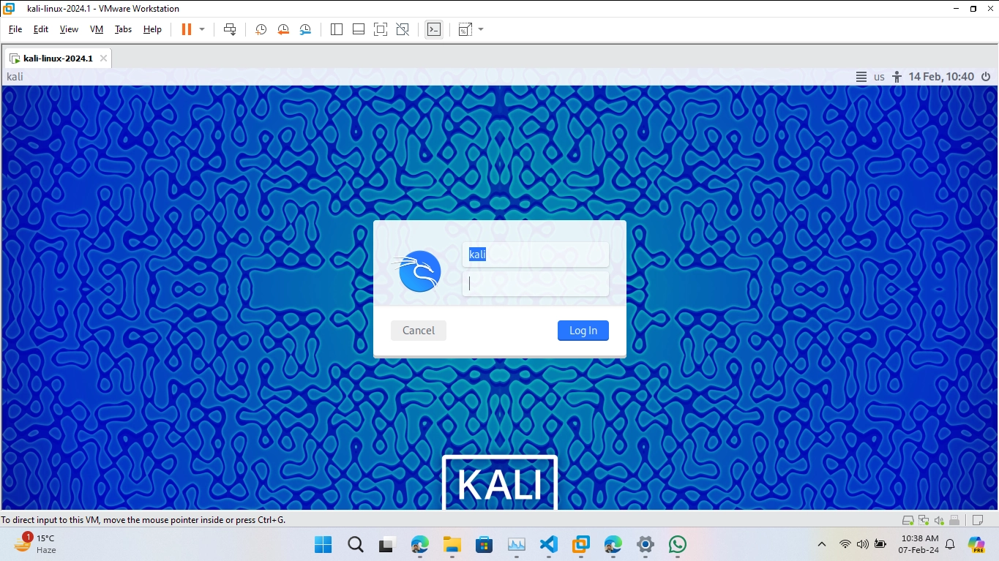

Practical 2: Creation of Virtual Environment and Mounting Operating System in VirtualBox
2024, February 7
2. Setting Up Kali Linux in VirtualBox
This section will guide you through the process of setting up a Kali Linux virtual machine in VirtualBox.
2.1. Downloading the Kali Linux Virtual Image
Begin by downloading the pre-built Kali Linux VirtualBox image:
- Visit the official Kali Linux download page at https://www.kali.org/get-kali/#kali-virtual-machines.
- Under the 'Pre-built VMs' section, locate the VirtualBox image which is typically marked with a 'VirtualBox' badge and '64-bit' label.
- Click on the 'VirtualBox' option and choose your preferred download method (direct download or torrent). If the file is compressed (usually with a .zip or .7z extension), ensure you have the necessary software to extract it, such as 7-Zip or WinRAR.
Note: The download size can be substantial, so a stable internet connection is recommended.
 Figure 2.1.1: Downloading Kali
Figure 2.1.1: Downloading Kali
Figure 2.1.1: Downloading Kali
For visual guidance, see the Image Reference section below.
2.2. Extracting the Virtual Machine
Once the download is complete, you'll need to extract the image:
- Navigate to the downloaded file on your computer.
- Right-click the compressed file and select 'Extract here' or 'Extract to...' depending on your system and extraction software.
- Wait for the extraction process to complete, which will produce a folder containing the Kali Linux
.vbox and .vdi files.
 Figure 2.2.1: Extracted Virtual Machine
Figure 2.2.1: Extracted Virtual Machine
Figure 2.2.1: Extracted Virtual Machine
For visual guidance, see the Image Reference section below.
2.3. Importing the Virtual Machine
 Figure 2.3.1: Before Import
Figure 2.3.1: Before Import
Figure 2.3.1: Before Import
With the files extracted, you can now set up the virtual machine using the following steps:
- Open the folder where the files were extracted.
- Find the file with the extension
.vbox and double-click it to open with VirtualBox.
- VirtualBox will launch and automatically start the import process for Kali Linux with pre-configured settings.
 Figure 2.3.2: After Import of Kali Linux
Figure 2.3.2: After Import of Kali Linux
Figure 2.3.2: After Import of Kali Linux
For visual guidance, see the Image Reference section below.
2.4. Configuring the Virtual Machine (Optional)
Before starting the virtual machine, you might want to review or alter its settings:
- With VirtualBox open, select the Kali Linux virtual machine and click on 'Settings'.
- Here, you can modify configurations such as the amount of allocated RAM, CPU cores, and network settings as you see fit for your usage.
- After making any desired changes, click 'OK' to save them.
 Figure 2.4.1: Configuring Kali Linux
Figure 2.4.1: Configuring Kali Linux
Figure 2.4.1: Configuring Kali Linux
2.5. Running the Virtual Machine
Your Kali Linux virtual machine is now ready to use:
- Select the Kali Linux VM in VirtualBox and click the 'Start' button to boot up the virtual machine.
- Follow any on-screen instructions to complete the Kali Linux setup, if necessary.
Note: The initial username and password for Kali Linux virtual machines are typically 'kali'/'kali', but be sure to check the documentation provided with the download for any specific instructions or credentials.
 Figure 2.5.1: Booting Kali Linux
Figure 2.5.1: Booting Kali Linux

Figure 2.5.1: Booting Kali Linux
For visual guidance, see the Image Reference section below.
2.6. Installing Guest Additions on Kali Linux VM (Optional)
Guest Additions improve the interaction between the host system and the virtual machine for better usability and performance. Follow these steps to install Guest Additions on the Kali VM:
sudo apt update
sudo apt install -y virtualbox-guest-x11
Restart your Kali VM to apply the changes effectively.
2.7. Network Configuration (Optional)
Configuring network settings is crucial for enabling the Kali VM to communicate with the Internet and other devices:
- NAT: Suitable for users who need the VM to access the internet but remain isolated from the host network.
- Bridged Adapter: Makes the VM appear as a separate device on the network, receiving its own IP address, which is useful for advanced networking needs like running a server from the VM.
Image Reference